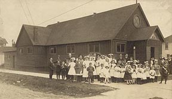
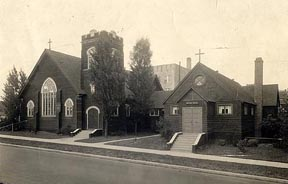
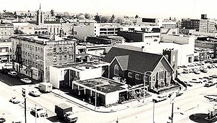
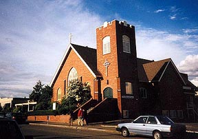

Christ Episcopal Church of Seattle, Washington 1903-2008
A Church on the Move
On November 1st, 1903, All Saint's Church was started in the University District of Seattle, Washington. Because there was already an Episcopal Church with the name "All Saint's" in the Seattle area, the name of the church was changed in its early years to Christ Episcopal Church. A Chapel was built on the corner of NE 47th Street and Brooklyn Avenue NE in 1904, and the first church was built on that site in 1909.
In 1914 this structure was moved to the lot south of the corner lot, and it was remodeled to serve as a parish hall. A new church was built on the corner lot.
In 1931 the parish hall was moved to 12th NE and given to the YMCA for use as a gymnasium. The church itself was moved to the south lot, and the corner lot was leased to Shell oil for a gas station.
In 1954 the new church house was dedicated on Nov. 21. This structure, erected on the corner lot, was to be used for offices, Sunday School classes and meeting rooms. Plans had been made to rebuild the church as well, but these were later abandoned, or at least put on indefinite hold, and the church building was bricked.
Christ Episcopal Church Clergy
- 1904-1909 Rev. G. Clement King
- 1909-1921 Rev. Willis Henri Stone
- 1922-1942 Rev. Paul B. James
- 1942-1947 Rev. Lewis J. Bailey
- 1948-1954 Rev. Walter W. McNeil Jr.
- 1955-1958 Rev. Dr. David S. Alkins
- 1959-1971 Rev. Dr. Ainsley Maxwell Carlton
- 1971-1978 Rev. Henry Jesse
- 1980-1991 Rev. Barrett K. Lindsey
- 1991-Present Rev. Stephen Garratt
- 
- 
- 
- 